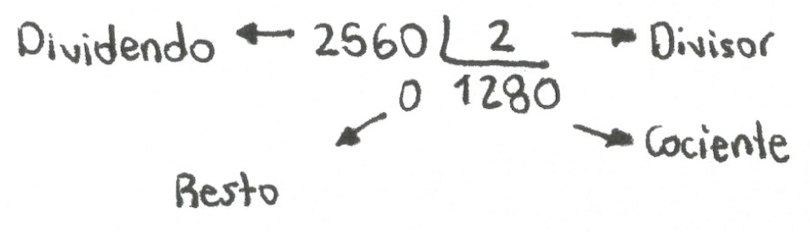

Un poco de Historia...
El concepto “Base” se remonta de mucho tiempo atrás, donde los nuestros ancestros tenían la necesidad de contar a partir de símbolos, a partir de esto, se creaban varios, cada uno interpretando un valor diferente.
En el momento en que se llegaba fin a una cantidad determinada, se marcaba un valor distinto que los representaba a todos, este es denominado como “Base”, a partir de allí se volvería a añadir los números desde el comienzo, creando
una secuencia que puede ser prácticamente infinita.
Actualmente, la base que más se utiliza es la Decimal (10), pues se deriva de la cantidad de dedos que podemos contar en nuestras manos, aun esto, al pasar de los años la forma de escribir esto ha sido muy diferente, pues hay
culturales las cuales tienen una forma muy diferente de escribir a la que normalmente conocemos, esto se le denomina como “Sistema de Numeración.
(Base (aritmética), s.f).
Condiciones Generales
(Jiménez, L., Gordillo, J., y Rubiano, G., 2004)
En este Teorema, se puede evidenciar que cualquier número podría escribirse en cualquier base b, y aún así se garantiza la conversión con otro tipo de base.
Es de considerar si algún número tiene base diferente a la Decimal, este deberá describirse con la siguiente connotación, en donde:
num = número y b = base
(Jiménez et al., 2004)
(num)b
//
(1214)4
(325245)6
Recordar los elementos que componen una división:

Sistema Decimal
Este sistema es el más usado por las personas a nivel mundial, pues es que normalmente lo utilizamos para realizar operaciones básicas en nuestro diario como la suma, la resta, la adición.
Este trabaja 10 símbolos en su numeración, los cuales son 0, 1, 2, 3, 4, 5, 6, 7. 8, 9.
Como su nombre lo indica, es base 10 , por lo tanto cualquier número octal puede expresarse de la manera:
(153867191)10
Aunque al ser este el más usado, se puede obviar los paréntesis y la base.
(Ecured, s.f).
Sistema binario
Este sistema es muy conocido y muy tratado para operaciones básicas, pues este es el que se compone de tan solo 2 símbolos para trabajar su numeración 0 y 1 .
Como su nombre lo indica, es base 2 , por lo tanto cualquier número binario puede expresarse de la manera:
(1100011010)2
(Ecured, s.f).
Sistema octal
Este sistema es el que se compone de tan solo 8 símbolos para trabajar su numeración 0, 1, 2, 3, 4, 5, 6, 7.
Como su nombre lo indica, es base 8 , por lo tanto cualquier número octal puede expresarse de la manera:
(1536711)8
(Ecured, s.f).
Sistema hexadecimal
Este sistema es el que se compone de tan solo 16 símbolos para trabajar su numeración 0, 1, 2, 3, 4, 5, 6, 7, 8, 9, A, B, C, D, E, F.
Como su nombre lo indica, este trabaja base 16, por lo tanto cualquier número octal puede expresarse de la manera:
(CA7F)16
(Ecured, s.f).
Otras bases
Si la base excede las 10 símbolos (Base Decimal), la siguiente numeración 10, 11, 12, 13, 14, … , (b - 1), tomará connotación de las letras del abecedario iniciando desde la A, así como se obtiene en ejemplo:
Si la b: 18, entonces se obtiene que los siguientes valores a partir del 9 son:
10 = A
11 = B
12 = C
13 = D
14 = E
15 = F
16 = G
17 = H
Fuente: autor
Conversión
Si se desea convertir un número de base 10 a cualquiera otra, se deberán seguir los siguientes pasos:
1: Para iniciar, dividiremos el número decimal, este será nuestro dividendo.
2: El número de nuestra base objetivo pasará a ser nuestro divisor.
3: Se realiza la operación, a partir de esto guaraderos todos los residuos (restos) que vayamos obteniendo.
4: Una vez tengamos nuestro cociente, este pasará a hacer nuestro nuevo divisor.
5: Se procederán a hacer divisiones sucesivas con los pasos anteriores, y el proceso se acabará cuando el cociente quede en 0.
6: Al final se almaceraon todos los residuos, estos son los núeros que conforman la cadena de caracteres de la conversión. Para acomodarlos, se procederá a iniciar con el último y se deberá ir progresivamente
acomodando los de las anteriores hasta llegar al primer residuo.
(Sangaku S.L, 2020).
Ejemplo 1
Se desea convertir el numero 560 en base 10, a binario.
Fuente: Autor
Explicación...
Como se mencionó en la conversión, procederemos a realizar divisiones progresivas y nuestra primera será 560 entre 2.
procedemos a realizar la operación y nuestro primer residuo que guardamos es el 0 y el cociente 280 será el nuevo divisor.
Se realizan todas las divisiones hasta que nuestro cocinte resulte en 0.
Después de esto, los residuos se acomodarán en sentido derecho - izquierdo para así reescribir nuestra nueva cifra en base binaria.
Ejemplos dinámicos
Conversión de números decimales a otras bases
número: a
El resultado es: